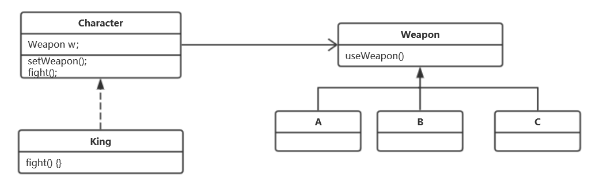

策略设计模式：定义一组可以互相替换的算法或行为，在运行时动态的替换。
特点：比继承更加优雅的一种代码复用的方式。

定义了一个国王，国王可以随时通过setWeapon()方法更换武器ABC，将fight()方法的实现委托给w.useWeapon()。
Character.java
public abstract class Character {
public WeaponBehavior weapon;
abstract void fight();
void setWeapon(WeaponBehavior w) {
weapon = w;
}
}King.java
public class King extends Character{
King(WeaponBehavior w) {
weapon = w;
}
public void fight() {
System.out.print("The king use ");
weapon.useWeapon();
}
}WeaponBehavior.java
public interface WeaponBehavior {
void useWeapon();
}SwordBehavior.java
public class SwordBehavior implements WeaponBehavior{
public void useWeapon() {
System.out.println("大宝剑");
}
}KnifeBehavior.java
public class KnifeBehavior implements WeaponBehavior{
public void useWeapon() {
System.out.println("七星刀");
}
}